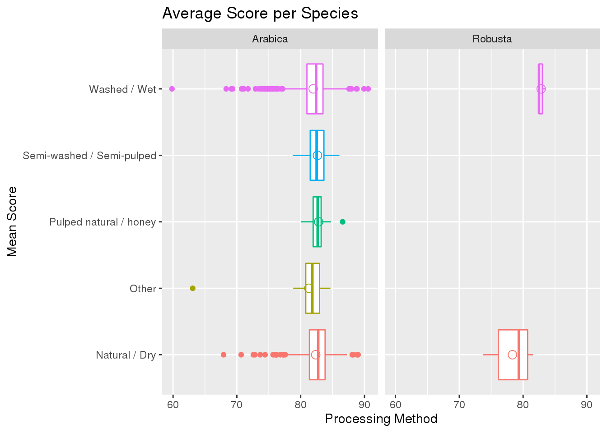

library(here)
library(ggplot2)
library(tidyverse)
library(readxl)
knitr::opts_chunk$set(tidy = TRUE, echo = TRUE)
coffee <- read_csv(here::here("data", "tidytuesday", "data", "2020", "2020-07-07", "coffee_ratings.csv"))For my first dataset, I will be examining the ratings of coffee beans being processed in various ways. The different ways that coffee beans can be processed are natural/dry, pulped natural/honey, semi-washed/semi-pulped, or washed/wet. This data consists of 1,339 observations and 43 variables, only 4 of which I will be using in my analysis. The first variable I will use is total_cup_points. This variable is the total score that the coffee receives out of 100. The second variable is processing_method, which states the method by which this coffee was processed. The third variable is country_of_origin. This variable states which country the coffee was produced in. The final variable I will be using is species, which shows the species of coffea.
Question 1
How does the rating differ between cups that were processed in one of the various ways? To explore this question, we need to first select the data to only show the variables total_cup_points and processing_method. Then we filter out the entries with N/A.
coffee %>% select(total_cup_points, processing_method) %>% group_by(processing_method) %>%
filter(!is.na(processing_method)) %>% ggplot(aes(x = processing_method, y = total_cup_points,
color = processing_method)) + geom_boxplot(show.legend = F) + ggtitle("Score per Processing Method") +
xlab("Total Cup Score") + ylab("Processing Method") + coord_flip()As you can see, coffee that was processed using a washed/wet method or a natural/dry method showed a wider range of results than the other methods. While this may be in part that those two methods had a larger sample size, the other methods did not have any scores blelow a 75 while the first two methods had numerous below 75. This shows that the other methods are more difficult than the washed/wet and the natural/dry methods, but yield higher quality coffee more consistently.
Question 2
Which species of coffee produce the highest average score with each method? For this question, we must first select the appropriate data. I will be selecting the variables total_cup_points and species.
coffee %>% select(total_cup_points, species, processing_method) %>% filter(!is.na(processing_method)) %>%
group_by(processing_method, species) %>% ggplot(aes(x = processing_method, y = total_cup_points,
color = processing_method)) + geom_boxplot(show.legend = F) + facet_wrap(~species) +
ggtitle("Average Score per Species") + xlab("Mean Score") + ylab("Processing Method") +
coord_flip() + stat_summary(fun.y = mean, geom = "point", shape = 1, size = 3,
show.legend = F) As we can see, For the Arabica species the pulped natural/honey method produced the highest average score, and for the Robusta species the washed/wet method produced the highest average score by a signifigant margin.
Question 3
Which countries produce the highest rating using each producing method? For this question we should start by selecting the appropriate data and filtering out the N/A entries. After that we should get the average cup score by summarizing that scores into a new variable.
coffee %>% select(total_cup_points, country_of_origin, processing_method) %>% filter(!is.na(processing_method)) %>%
group_by(country_of_origin, processing_method) %>% summarize(mean_score = mean(total_cup_points)) %>%
ggplot(aes(x = mean_score, y = country_of_origin, color = country_of_origin)) +
geom_point(show.legend = F) + facet_grid(~processing_method) + ggtitle("Average Score per Country of Origin") +
xlab("Mean Score") + ylab("County of Origin") As we can see Uganda, Papua New Guinea, and Ethiopia had the highest average score for the washed/wet method. For the natural/dry method, Tanzania, Panama, and Kenya had the highest average scores. For the semi-washed method, Thailand had the highest average score. For the Pulped natural method, Thailand, Taiwan, and Japan had the highest average scores. Finally for other mathods not listed, Costa Rica had the highest average score.
As we can see Uganda, Papua New Guinea, and Ethiopia had the highest average score for the washed/wet method. For the natural/dry method, Tanzania, Panama, and Kenya had the highest average scores. For the semi-washed method, Thailand had the highest average score. For the Pulped natural method, Thailand, Taiwan, and Japan had the highest average scores. Finally for other mathods not listed, Costa Rica had the highest average score.